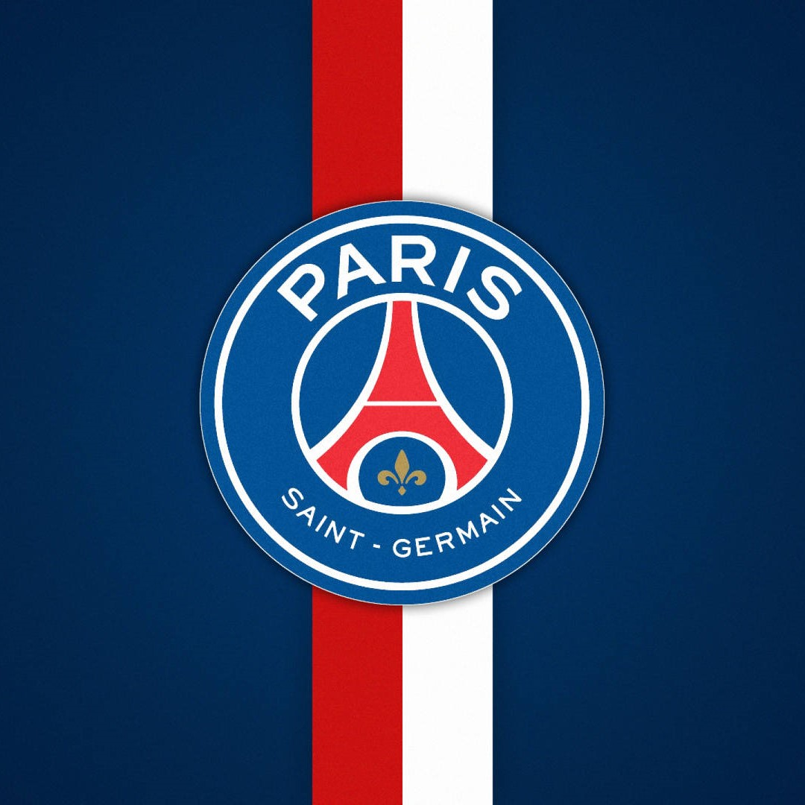

Paris Saint-Germain atau dikenal luas dengan sebutan PSG merupakan sebuah tim sepak bola Prancis yang bermain di Ligue 1, Prancis. Bermarkas di Paris, Prancis. Klub ini didirikan pada 12 Agustus 1970, berkat penggabungan Paris FC dan Stade Saint-Germain. club yang sekarang telah menjelma menjadi salah satu club tarkam terbaik di eropa.